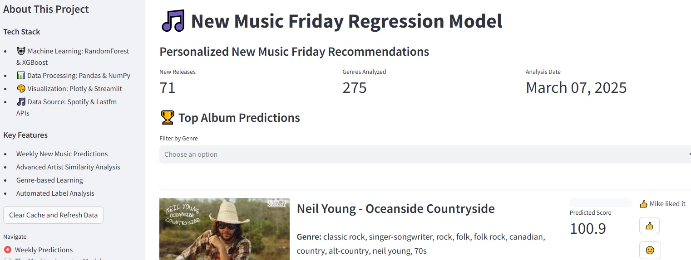
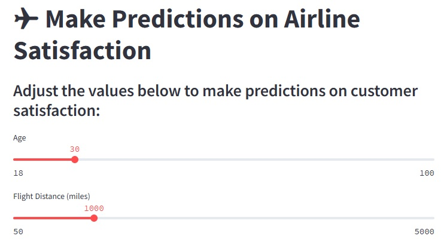
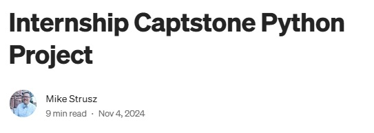
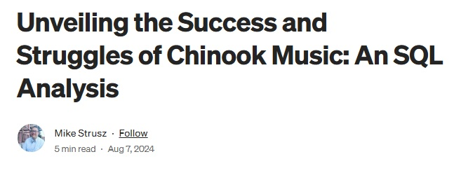

Intro
I enrolled in Coding Temple's Data Analysis program as a math teacher with 17 years of experience, aiming to leverage my math and ideation skills to make a real-world impact. I chose this program for its robust curriculum, ensuring I was overprepared for a mid-career switch. A few months in, I was recruited as a Data Analyst Intern at Tip a ScRxipt, a local Milwaukee startup, where I performed data modeling for prospective customers and investors using SQL, R, Python, and Tableau.
In this bootcamp, I learned advanced Excel, SQL, R, Python, machine learning, and Tableau. I've analyzed diverse datasets, including customer surveys, A/B marketing analytics, government logistics, retail, scientific research, and price modeling. For my capstone, I built a machine learning model trained on my music tastes to predict which of the 60+ albums released weekly I'm most likely to enjoy. I'm passionate about using machine learning for forecasting and customer segmentation to predict behaviors, such as identifying customers unlikely to follow up on appointments or those most likely to convert to season ticket holders.
Just as I built 10 of the 18 classes I taught from scratch, I bring a diverse knowledge base and deep curiosity to data analytics. I'm eager to join a Milwaukee-area or remote organization where I can apply my skills to push products and ideas further than imagined. I've also used AI to amplify the skills I learned at Coding Temple and am passionate about harnessing its power to make a difference in people's lives.
Check out my technical skills, project portfolio, about me & education, and data visualizations to see how I can add value to your organization.
Projects
Presentation Skills
Throughout my 17-year teaching career, I developed exceptional presentation and communication skills that I now apply to data analytics. Each project below includes a link to watch me present the analysis, demonstrating my ability to translate complex technical concepts into clear, actionable insights for stakeholders of all technical backgrounds.
New Music Friday Regression Model (Machine Learning)

I built a regression model trained on my music tastes to make customized recommendations for new album releases. Using RandomForest & XGBoost models with features like genre target encoding, artist centrality via PageRank, record label frequency encoding, and custom mood/energy scores derived from Spotify metrics. The model leverages both Last.fm and Spotify APIs for comprehensive music data. I deployed it as a Streamlit app with plans to enable user connections to Spotify for personalized recommendations.
Technologies: Python, Scikit-learn, XGBoost, Pandas, Streamlit, Spotify API, Last.fm API
Key Features: Feature engineering, API integration, regression modeling, web deployment
Airline Satisfaction Classification (Machine Learning)

This interactive app explores airline customer satisfaction using a dataset of over 100,000 rows and 23 variables. Built with Python, Streamlit, and Scikit-learn, it allows users to visualize data distributions, uncover feature relationships, and test machine learning models like K-Nearest Neighbors, Logistic Regression, and Random Forest. Users can make predictions by adjusting survey responses to see how different factors impact satisfaction predictions.
Technologies: Python, Scikit-learn, Pandas, Matplotlib, Seaborn, Streamlit
Key Features: Classification modeling, interactive visualization, feature importance analysis
Health Debit Card Analysis (Python)

As a data analytics intern at Tip-A-ScRxipt in 2024-2025, I analyzed health debit card purchase data using Python with Pandas, Matplotlib, and Seaborn. I cleaned data, engineered features, and conducted exploratory analysis to identify spending patterns and rejected purchases. By segmenting transactions by product group (FOOD, OTC, Other) and comparing spending across two subprograms, I provided actionable insights to help program managers promote healthier customer spending habits.
Technologies: Python, Pandas, Matplotlib, Seaborn
Key Features: Data cleaning, exploratory data analysis, business insights, data visualization
Chinook Music Store Analysis (SQL)

In this comprehensive SQL analysis of Chinook Music, a digital music store operating from 2009 to 2013, I uncovered key insights into sales patterns, customer behavior, and inventory management. Using complex SQL queries including joins, subqueries, CTEs, and window functions, I identified top-performing genres, customer segments, and regional sales trends. The analysis revealed both strengths and challenges in the company's business model, providing actionable recommendations for improving revenue and customer retention.
Technologies: SQL, Database Analysis, Data Visualization
Key Features: Complex SQL queries, business insights, sales analysis, customer segmentation
Mortgage Acceptance Rate Analysis (Excel)
Utilized Excel to analyze mortgage acceptance rates, employing pivot tables and visualizations. Conducted A/B testing to evaluate statistical significance across various mortgage subtypes, revealing insights into potential biases in the lending process. This project demonstrates my ability to handle sensitive topics professionally while delivering data-driven insights that can drive meaningful change.
Technologies: Excel, Pivot Tables, A/B Testing, Statistical Analysis
Key Features: Hypothesis testing, data visualization, bias analysis, statistical significance testing
UrbanWares Dataset Analysis (Statistics)
This presentation from my first week in the data analysis bootcamp showcases my ability to quickly apply statistical concepts to real-world business problems. Drawing on my background as a statistics teacher, I analyzed the UrbanWares dataset to extract meaningful insights and provide actionable business recommendations. This early project demonstrates my natural aptitude for data analysis and my ability to communicate complex findings in an accessible way.
Technologies: Statistical Analysis, Data Interpretation
Key Features: Business insights, statistical reasoning, data-driven recommendations
About Me & Education
Professional Summary
I'm a data analyst with a unique background in mathematics education, bringing 17 years of teaching experience to the world of data. My transition from education to data analytics has equipped me with a rare combination of technical expertise and exceptional communication skills. I excel at translating complex data insights into actionable recommendations that drive business decisions.
Career Journey
My path to data analytics began in the classroom, where I taught mathematics for 17 years, developing 10 courses from scratch. This experience honed my ability to break down complex concepts, identify patterns, and communicate effectively with diverse audiences. In 2023, I decided to leverage my mathematical foundation and problem-solving skills by enrolling in Coding Temple's Data Analytics bootcamp.
During my training, I was recruited as a Data Analyst Intern at Tip a ScRxipt, a Milwaukee healthcare startup, where I've been applying my analytical skills to real-world business challenges. This experience has confirmed my passion for using data to drive meaningful impact.
Education
Coding Temple: Data Analytics Certificate of Completion
Issued March 13, 2025
- Completed comprehensive portfolio of 40+ data analysis projects
- Demonstrated hands-on proficiency through multiple self-directed data projects
- Developed extensive practical skills through independent data analysis work
- Mastered skills in Statistics, Excel, R, SQL, Python, Machine Learning (Classification and Regression), and Tableau
- Completed exploratory data analysis and statistical analysis projects
View Certificate
Credential.net
M.S. in Educational Leadership
University of Wisconsin Oshkosh
B.S. in Education (Math Emphasis)
Martin Luther College
Data Philosophy
I believe data is most powerful when it tells a compelling story. My approach combines rigorous analysis with clear communication to ensure insights are not just accurate but actionable. I'm particularly passionate about using machine learning to uncover patterns that can predict future behaviors and help organizations make proactive decisions.
Outside of Data
When I'm not analyzing data, I am an avid listener of music. I'm a teetotaler who loves exploring Milwaukee and its vibrant art scene with my wife Naomi. I'm also an avid learner who enjoys staying current with emerging technologies and methodologies in the data science field.